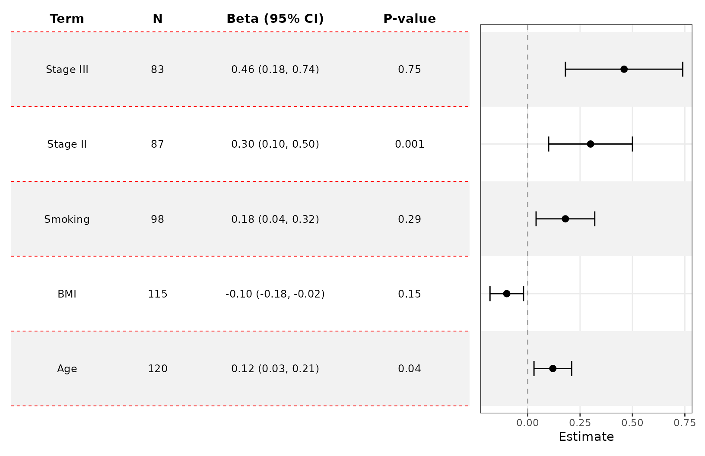
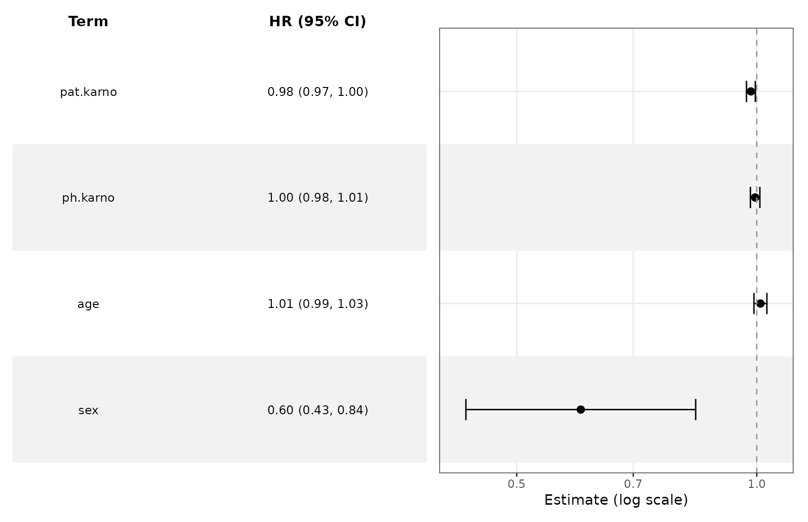

Customize Forest Plots and Tables
Source:vignettes/ggforestplotR-plot-customization.Rmd
ggforestplotR-plot-customization.RmdThis article focuses on utility and enhanced customization of forest plots and accompanied tables.
Base plotting data
coefs <- data.frame(
term = c("Age", "BMI", "Smoking", "Stage II", "Stage III"),
estimate = c(0.12, -0.10, 0.18, 0.30, 0.46),
conf.low = c(0.03, -0.18, 0.04, 0.10, 0.18),
conf.high = c(0.21, -0.02, 0.32, 0.50, 0.74),
sample_size = c(120, 115, 98, 87, 83),
p_value = c(0.04, 0.15, 0.29, 0.001, 0.75),
section = c("Clinical", "Clinical", "Clinical", "Tumor", "Tumor")
)Group rows and control strip placement
grouping creates section panels, and
grouping_strip_position controls which side gets the strip
labels.
ggforestplot(
coefs,
grouping = "section",
grouping_strip_position = "right",
striped_rows = TRUE
)
Distinct variable separation
Use separate_groups and separate_lines when
you want a more distinct visual separation between variables. This is
especially useful for categorical variables with many levels.
separate_groups automatically appends the variable name to
the level.
block_coefs <- data.frame(
term = c("race_black", "race_white", "race_other", "age", "bmi"),
label = c("Black", "White", "Other", "Age", "BMI"),
estimate = c(0.24, 0.08, -0.04, 0.12, -0.09),
conf.low = c(0.10, -0.04, -0.18, 0.03, -0.17),
conf.high = c(0.38, 0.20, 0.10, 0.21, -0.01),
variable_block = c("Race", "Race", "Race", "Age", "BMI")
)
ggforestplot(
block_coefs,
label = "label",
separate_groups = "variable_block",
separate_lines = TRUE,
striped_rows = TRUE
) +
scale_y_discrete(limits = rev(c("BMI", "Age", "Race: White",
"Race: Black", "Race: Other")))
#> Scale for y is already present.
#> Adding another scale for y, which will replace the existing scale.
Add a side table
add_forest_table() allows you to attach model
information to the coefficient plot. The table can be added to either
the left or right side and allows for some customization. You should
always add the table LAST, after
styling your plot because the function calls on patchwork
internally. patchwork requires specific syntax to customize
plots and is generally more difficult to get working correctly.
ggforestplot(
coefs,
grouping = "section",
grouping_strip_position = "right",
n = "sample_size",
p.value = "p_value",
striped_rows = TRUE
) +
add_forest_table(
show_n = TRUE,
show_p = TRUE,
estimate_label = "Beta"
)
Customize the table
add_forest_table also lets you change some minor styling
elements of the forest table.
ggforestplot(
coefs,
n = "sample_size",
p.value = "p_value",
striped_rows = TRUE
) +
add_forest_table(
position = "left",
show_n = TRUE,
show_p = TRUE,
estimate_label = "Beta",
grid_lines = T,
grid_line_linetype = 2,
grid_line_colour = "red"
)
Split tables
add_split_table() can be used to create more traditional
looking forest plots. You can choose which summary information goes to
which side. Like add_forest_table(), it should be added
after any plot-level styling.
ggforestplot(
coefs,
n = "sample_size",
p.value = "p_value",
striped_rows = TRUE
) +
scale_x_continuous(limits = c(-.8,.8)) +
add_split_table(
left_columns = c("term","n"),
right_columns = c("estimate","p"),
estimate_label = "Beta"
) 
Plotting other types of model coefficients
You can use exponentiate = TRUE for models on the
log-odds scale (or similar).
data(CO2)
l1 <- glm(Treatment ~ conc + uptake + Type, family = binomial(link = "logit"),
data = CO2)
ggforestplot(l1, exponentiate = TRUE, striped_rows = T) +
add_forest_table(position = "left",
estimate_label = "OR",
show_p = F)
We can do this for survival models as well.
lung <- survival::lung
lung <- lung |>
dplyr::mutate(
status = dplyr::recode(status, `1` = 0, `2` = 1)
)
s1 <- survival::coxph(Surv(time, status) ~ sex + age + ph.karno + pat.karno, data = lung)
ggforestplot(s1, exponentiate = T, striped_rows = T) +
add_forest_table(estimate_label = "HR")
Compare multiple estimates
The group argument is handy when comparing estimates
from several models.
comparison_coefs <- data.frame(
term = rep(c("Age", "BMI", "Smoking", "Stage II", "Stage III"), 2),
estimate = c(0.12, -0.10, 0.18, 0.30, 0.46, 0.08, -0.05, 0.24, 0.40, 0.58),
conf.low = c(0.03, -0.18, 0.04, 0.10, 0.18, 0.00, -0.13, 0.10, 0.20, 0.30),
conf.high = c(0.21, -0.02, 0.32, 0.50, 0.74, 0.16, 0.03, 0.38, 0.60, 0.86),
model = rep(c("Model A", "Model B"), each = 5),
section = rep(c("Clinical", "Clinical", "Clinical", "Tumor", "Tumor"), 2)
)
ggforestplot(
comparison_coefs,
group = "model",
grouping = "section",
striped_rows = TRUE,
dodge_width = 0.5,
grouping_strip_position = "right"
) +
theme(legend.position = "bottom")